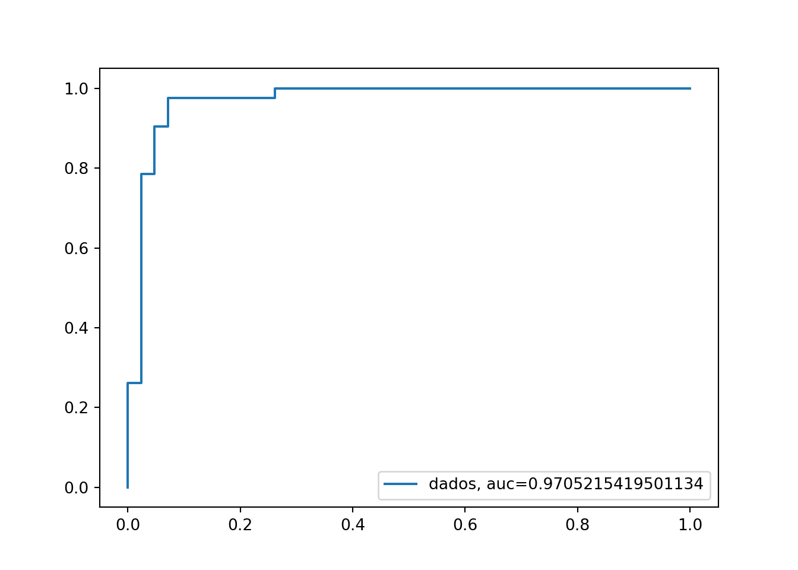

Projeto de Aprendizado de Máquina no python
Entendimento do problema
Para a realização do projeto de aprendizado de máquina no python, foi utilizado a base de dados de pinguins do árquipélago de Palmer na antártida. O objetivo principal será criar um modelo de aprendizado de máquina capaz de classificar o sexo dos pinguins. A base de dados possui as seguintes colunas:
- species: Espécie do pinguim;
- island: Ilha onde foi registrado o pinguim;
- bill length(mm): Comprimento do bico em milímetros;
- bill depth(mm): Profundidade do bico em milímetros;
- flipper length(mm): Comprimento da nadadeira;
- body mass (g): Massa corporal em gramas;
- sex: Sexo do pinguim;
- year: Ano de registro do pinguim;
- rowid: identificador.
Bibliotecas utilizadas
As seguintes bibliotecas serão usadas para manipulação e implementação do modelo de aprendizado de máquina:
| Pacotes | Descrição |
|---|---|
| pandas | Pacote para análise e manipulação dos dados |
| scikit-learn | pacote para transformação, imputação, implementação, treinamento e validação de modelos |
| plotly | Visualização de dados |
A implementação das práticas podem ser feitas utilizando-se do próprio computador ou em ferramentas na nuvem. Um exemplo seria o google colab oferecido pela empresa google. Para realizar o download na máquina, deve-se utilizar os seguintes comandos no Terminal:
pip install -U scikit-learn
pip install pandas
pip install plotly
Coleta de dados
A coleta de dados foi feita no repositório no github, onde é possível baixar em um arquivo .csv:
import pandas as pd # biblioteca pandas
df = pd.read_csv('penguins.csv') # comando para ler a base de dados
df = df.drop(['rowid'], axis = 1) # retirar a coluna de idsDivisão dos dados
Vamos criar uma análise básica preliminar pra observar se há valores nulos na nossa variável alvo:
df.isnull().sum() # mostrar os valores nulos por coluna## species 0
## island 0
## bill_length_mm 2
## bill_depth_mm 2
## flipper_length_mm 2
## body_mass_g 2
## sex 11
## year 0
## dtype: int64Observe que há valores nulos. Como estão em nossa coluna alvo, serão excluídos. Depois é feita a conversão para valores numéricos.
df = df[df['sex'].notnull()] # tirar apenas as linhas que possuem a coluna alvo nula
df['sex'] = df['sex'].apply(lambda x : 1 if(x == 'male') else 0 ) # transformar em atributos numéricosa função apply serve para aplicar alguma função em uma determinada coluna, já a função lambda é um tipo de função que não é preciso declarar antes para se utilizar.
Agora vamos dividir os dados em treino e teste. O treino será utilizado para não só observar o comportamento da base, mas também para imputação e treinamento do modelo:
from sklearn.model_selection import train_test_split
df_treino, df_teste = train_test_split(df, stratify = df['sex']) # o parâmetro stratify é utilizado para preservar a proporção das classesAnálise exploratória
Agora vamos observar o comportamento das colunas da base de dados.
df_treino.describe() # vai te dá um resumo descritivo das colunas## bill_length_mm bill_depth_mm ... sex year
## count 249.000000 249.000000 ... 249.000000 249.000000
## mean 44.067470 17.242972 ... 0.506024 2008.016064
## std 5.586182 1.972830 ... 0.500971 0.837469
## min 32.100000 13.100000 ... 0.000000 2007.000000
## 25% 39.200000 15.700000 ... 0.000000 2007.000000
## 50% 45.100000 17.500000 ... 1.000000 2008.000000
## 75% 48.700000 18.800000 ... 1.000000 2009.000000
## max 59.600000 21.500000 ... 1.000000 2009.000000
##
## [8 rows x 6 columns]Algumas colunas parecem está simétricas em torno da média. Vamos observar algumas instâncias:
df_treino.head() # Vai te dá as primeiras linhas da base de dados## species island bill_length_mm ... body_mass_g sex year
## 73 Adelie Torgersen 45.8 ... 4150.0 1 2008
## 110 Adelie Biscoe 38.1 ... 3825.0 0 2009
## 334 Chinstrap Dream 50.2 ... 3800.0 1 2009
## 0 Adelie Torgersen 39.1 ... 3750.0 1 2007
## 233 Gentoo Biscoe 52.5 ... 5450.0 1 2009
##
## [5 rows x 8 columns]Agora vamos criar alguns gráficos para as colunas.
import plotly.express as px
px.bar(df_treino['species'].value_counts().sort_values(ascending = False),
color = df_treino['species'].value_counts().sort_values(ascending = False).index,
labels= { 'index' : 'espécies', 'value' : 'quantidade', 'color':'espécie'}
)Acima temos os seguintes comandos que compôem a criação do gráfico de barras:
- value_counts(): Mostra a frequência de cada categoria da coluna;
- sort_values(ascending = False): Ordena os valores do maior para o menor;
Observe que temos espécimes desbalanceados. Vamos observar alguns histogramas.
px.histogram(df_treino['bill_length_mm'], labels = {'value':'Comprimento do bico(mm)', 'count':'Frequência', 'variable' :'Comprimento do bico(mm)'})px.histogram(df_treino['bill_depth_mm'], labels = {'value':'Profundidade do bico(mm)', 'count':'Frequência', 'variable' :'Profundidade do bico(mm)'})px.histogram(df_treino['flipper_length_mm'], labels = {'value':'Comprimento da nadadeira(mm)', 'count':'Frequência', 'variable' :'Comprimento da nadadeira(mm)'})Vamos relacionar algumas variáveis para identificar algum padrão.
px.scatter(df_treino['bill_depth_mm'], df_treino['flipper_length_mm'],
color = df_treino['species'], size = df_treino['body_mass_g'], labels = {'x':'Profundidade do bico(mm)', 'index':'Comprimento da nadadeira(mm)', 'color' :'Espécies'} )Observe que dependendo da profundidade do bico, há uma nitida diferença entre as espécies.
px.scatter(df_treino['bill_length_mm'], df_treino['body_mass_g'] ,
color = df_treino['sex'].apply(lambda x: 'male' if(x == 1) else 'female') ,labels = {'x':'Profundidade do bico(mm)', 'index':'Massa corporal(g)', 'color' :'Sexo'})Imputação e transformação dos dados
Antes de alimentar qualquer modelo, deve-se tratar e transformar cada coluna da base de dados.
from sklearn.pipeline import Pipeline
from sklearn.compose import ColumnTransformer
from sklearn.preprocessing import StandardScaler, OneHotEncoder
from sklearn.impute import SimpleImputer
pipe_num = Pipeline([
('imputer_num', SimpleImputer(strategy = 'median') ),
('transform_num', StandardScaler() )
])
pipe_cat = Pipeline([
('imputer_cat', SimpleImputer(strategy = 'most_frequent') ),
('transform_cat', OneHotEncoder() )
])
transformador = ColumnTransformer([
('numerico', pipe_num, ['bill_length_mm', 'bill_depth_mm', 'flipper_length_mm', 'body_mass_g', 'year'] ),
('categorico', pipe_cat, ['species','island'] )
])Acima temos algumas funções que são utilizadas para o processo de imputação e transformação dos dados:
Pipeline: Container que armazenará as funções necessárias para imputação e transformação dos dados. Foi dividido em pipe_num para imputar e transformar os dados numéricos e pipe_cat para os dados categóricos.
Sua sintaxe se dá: Pipeline([(‘nome_do_passo’, função())])
Para os atributos numéricos, foram propostos a imputação pela mediana e a transformação pela Z Score, já para os categóricos foi pela mais frequente juntamente com a transformação OneHotEncoder que atribui colunas binárias a cada valor das colunas.
ColumnTransformer: Tem função semelhante com as pipelines, porém o objetivo é gerenciar quais colunas receberão as devidas imputações e transformações.
Sua sintaxe se dá: ColumnTransformer([(‘nome_do_passo’, função(), [lista_de_atributos] )])
Agora basta separar as variáveis preditoras e a coluna alvo para finalmente realizar a etapa de transformação e imputação dos dados.
x_treino = df_treino.drop(['sex'], axis = 1) # armazenando as colunas preditoras
y_treino = df_treino['sex'] # armazenando a coluna alvo
x_treino_preparado = transformador.fit_transform(x_treino) # preparando as colunas preditorasA função fit_transform tem como objetivo imputar e transformar os nossos dados, mas também armazenar os valores de imputação para que seja utilizada no teste.
Comparação entre modelos
Vamos utilizar alguns modelos para comparar:
from sklearn.model_selection import cross_val_predict
from sklearn.metrics import classification_report
from sklearn.ensemble import RandomForestClassifier
pred = cross_val_predict(RandomForestClassifier(), x_treino_preparado, y_treino, cv = 5)
print(classification_report(y_treino,pred))## precision recall f1-score support
##
## 0 0.89 0.88 0.89 123
## 1 0.88 0.90 0.89 126
##
## accuracy 0.89 249
## macro avg 0.89 0.89 0.89 249
## weighted avg 0.89 0.89 0.89 249Foi utilizado a técnica de validação cruzada com 5 pacotes(folds) e o classificador Random Forest. As principais métricas já antes explicadas podem ser visualizadas com a função classification_report.
from sklearn.linear_model import LogisticRegression
pred = cross_val_predict(LogisticRegression(), x_treino_preparado, y_treino, cv = 5) #realizará a validação cruzada e retornará as predições
print(classification_report(y_treino,pred))## precision recall f1-score support
##
## 0 0.91 0.87 0.89 123
## 1 0.88 0.92 0.90 126
##
## accuracy 0.90 249
## macro avg 0.90 0.90 0.90 249
## weighted avg 0.90 0.90 0.90 249from sklearn.neighbors import KNeighborsClassifier
pred = cross_val_predict(KNeighborsClassifier(), x_treino_preparado, y_treino, cv = 5)
print(classification_report(y_treino,pred))## precision recall f1-score support
##
## 0 0.87 0.89 0.88 123
## 1 0.89 0.87 0.88 126
##
## accuracy 0.88 249
## macro avg 0.88 0.88 0.88 249
## weighted avg 0.88 0.88 0.88 249Observe que a regressão logistica se mostrou mais eficaz, logo será escolhida como o modelo de classificação.
Aprimoramento do modelo
Para o aprimoramento do modelo, será utilizado a pesquisa em grade(Grid Search).
from sklearn.model_selection import GridSearchCV
grade_aprimoramento={"C":[0.001, 0.01, 0.1, 1, 10, 100, 1000]} # grade de hiperparâmetros
grade = GridSearchCV(LogisticRegression(),grade_aprimoramento, cv=5)
grade.fit(x_treino_preparado,y_treino)## GridSearchCV(cv=5, estimator=LogisticRegression(),
## param_grid={'C': [0.001, 0.01, 0.1, 1, 10, 100, 1000]})Agora basta armazenar o melhor estimador encontrado.
modelo_final = grade.best_estimator_Teste final
Para a realização do teste final, será repetido o processo de transformação e imputação dos dados.
x_teste = df_teste.drop(['sex'], axis = 1)
y_teste = df_teste['sex']
x_teste_preparado = transformador.transform(x_teste)
modelo_final.fit(x_treino_preparado,y_treino)## LogisticRegression(C=10)y_pred = modelo_final.predict(x_teste_preparado)
print(classification_report(y_teste,y_pred))## precision recall f1-score support
##
## 0 0.91 0.93 0.92 42
## 1 0.93 0.90 0.92 42
##
## accuracy 0.92 84
## macro avg 0.92 0.92 0.92 84
## weighted avg 0.92 0.92 0.92 84Agora, vamos criar a curva ROC. Para isso, devemos pegar as probabilidades de pertencer a cada classe juntamente com as taxas de falsos e verdadeiros positivos. Para a criação vamos usar a biblioteca matplotlib
from sklearn.metrics import roc_curve,roc_auc_score
import matplotlib.pyplot as plt
y_pred_proba = modelo_final.predict_proba(x_teste_preparado) # pegando as probabilidades de cada classe
taxa_falso_positivos, taxa_verdadeiros_positivos, _ = roc_curve(y_teste, y_pred_proba[:,1]) # pegando as taxas
auc = roc_auc_score(y_teste, y_pred_proba[:,1]) # calculando a área sob a curva ROC
plt.plot(taxa_falso_positivos,taxa_verdadeiros_positivos,label="dados, auc="+str(auc))## [<matplotlib.lines.Line2D object at 0x7f8a4ca12b38>]plt.legend(loc=4)## <matplotlib.legend.Legend object at 0x7f8a4ca12e10>plt.show()
Observe que o modelo obteve um desempenho satisfatório, logo está apto a realização de classificações.